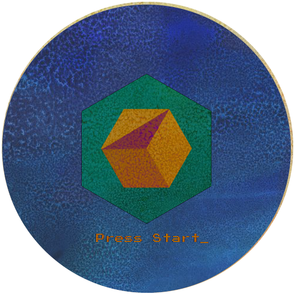

Graphic Design
Illustrator - Photoshop - Indesign - Flash
I graduated from Auburn University of Montgomery with a Bachelors in Graphic and Web Design
In graphic design my passion is logo design. I love using simple shapes to create dimensions.
- 

In graphic design my passion is logo design. I love using simple shapes to create dimensions.